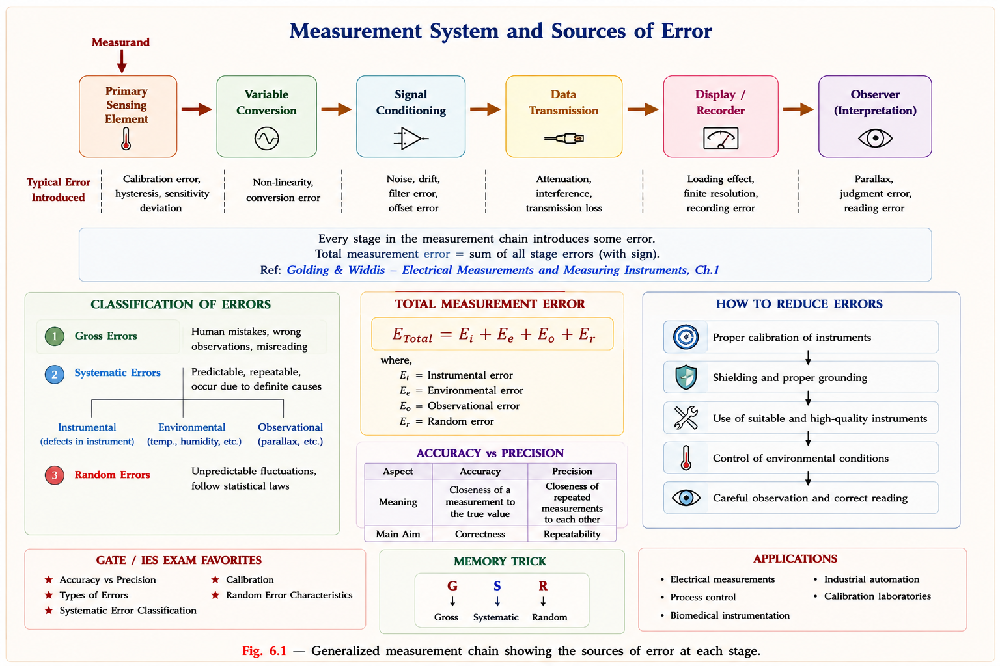
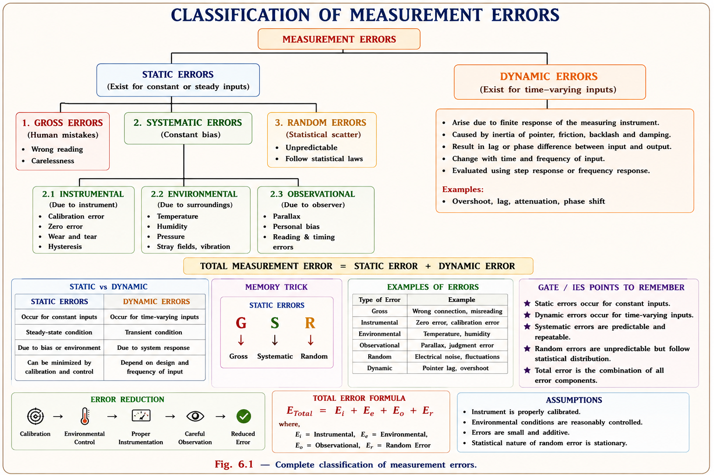
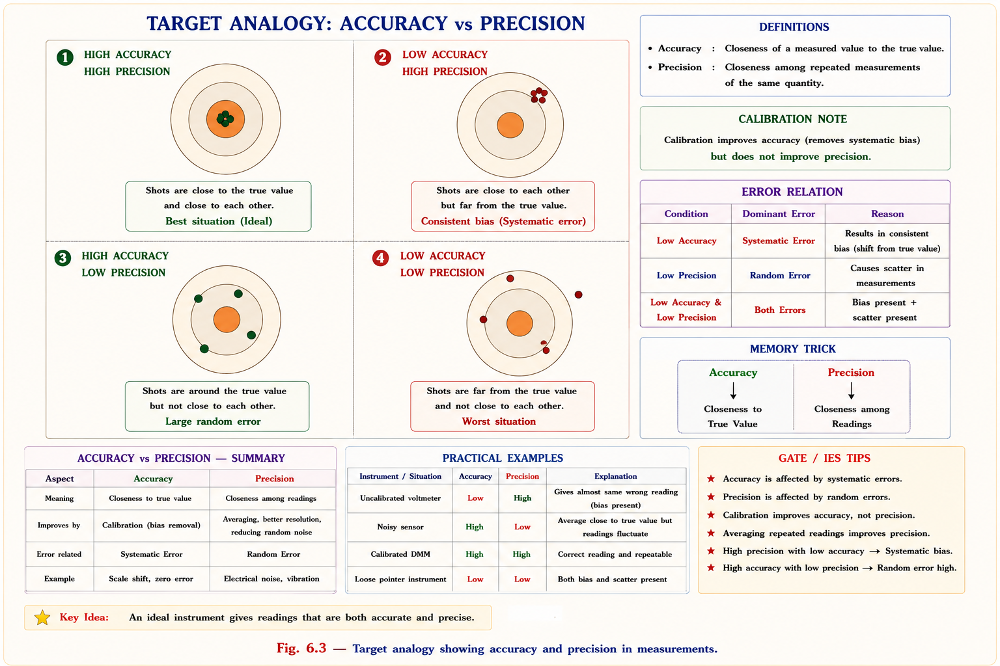
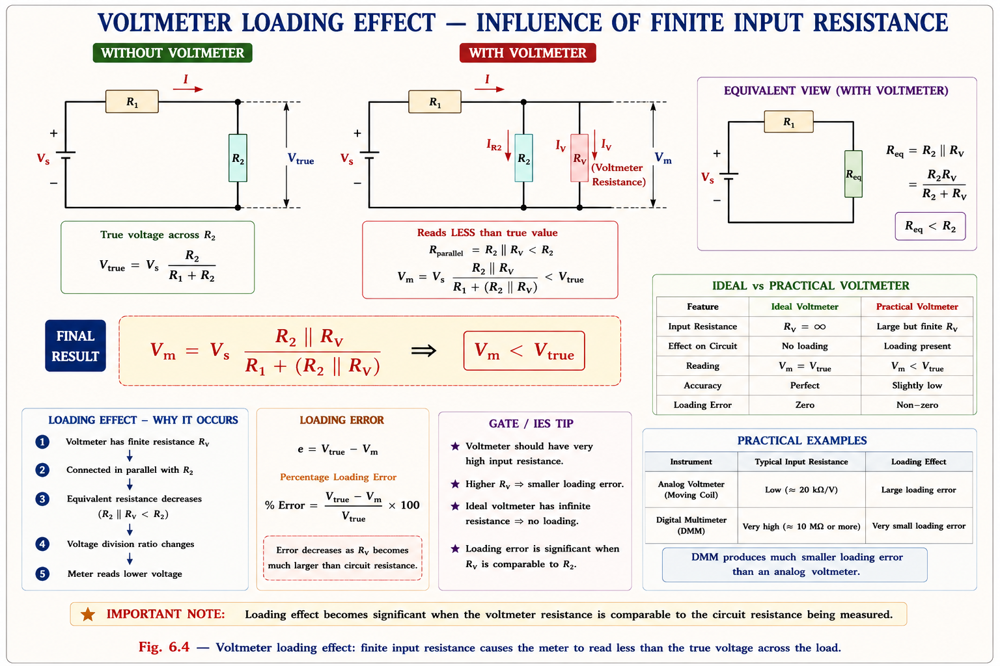
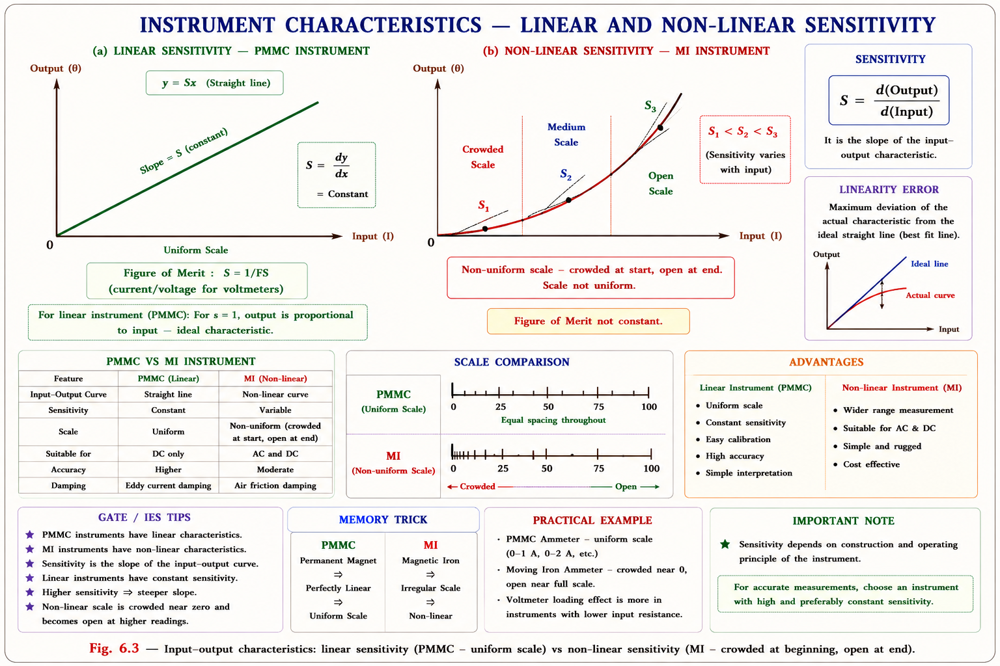
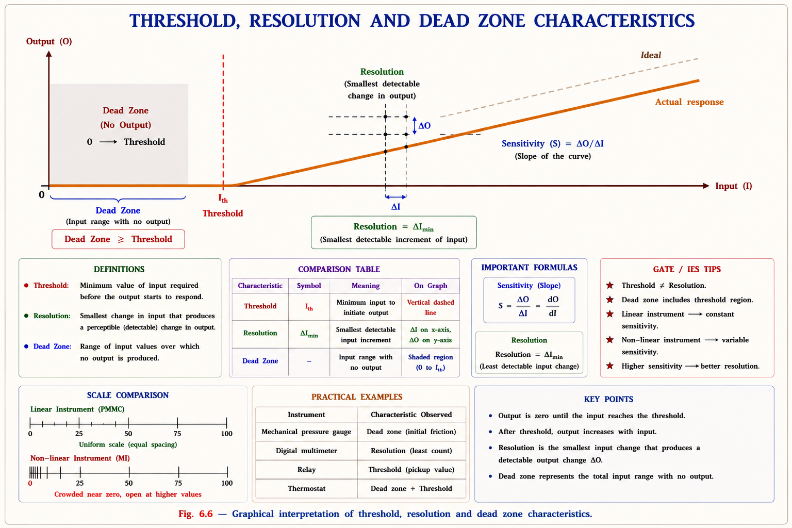
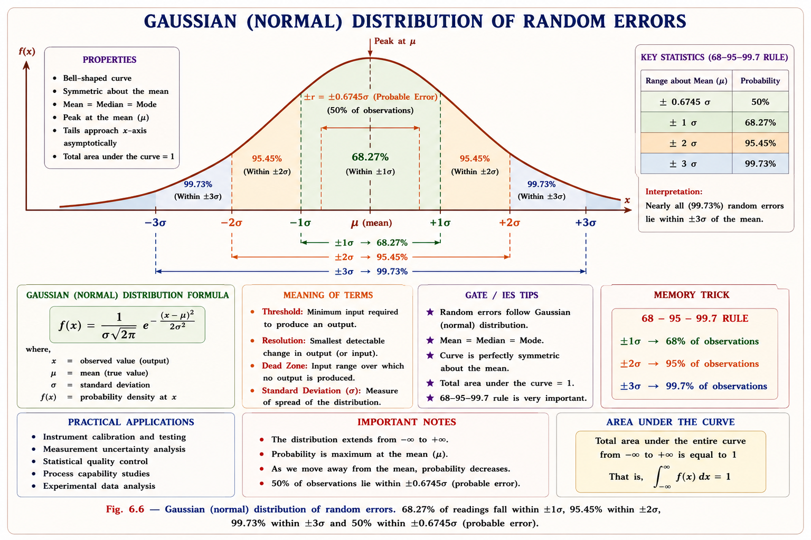

A rigorous treatment of measurement errors — their classification, mathematical analysis, instrument characteristics, statistical tools, and the propagation of uncertainty — following standard textbooks and aligned to GATE EE, IES E&T, and PSU exam patterns.
Every engineered system — from a power grid to a hospital monitor to a spacecraft — depends on measuring physical quantities accurately. Measurement is the bridge between the physical world and human understanding. Without it, we cannot verify a design, control a process, or assure product quality.
An instrument does not measure perfectly. The gap between what an instrument reads and what truly exists in nature is the subject of this chapter. Understanding this gap — its sources, its magnitude, and how to reduce it — is fundamental to every branch of electrical engineering.
In power systems, a 1% error in a CT or PT used for energy billing can mean crores of rupees of discrepancy annually across a distribution network. In medical instrumentation, a 2% error in a blood-pressure transducer can lead to dangerous clinical decisions. Measurement accuracy is not academic — it is mission-critical.

Before analysing errors, precise definitions are essential. The language of metrology is exact — confusing "accuracy" with "precision," for instance, is a common and costly mistake.
The measurand is the quantity being measured — for example, the RMS voltage across a resistor. The true value \(A_t\) is the actual, ideal value that would be obtained by a perfect measurement. In practice, the true value is never known exactly; it is approximated by a highly accurate standard or by the average of a very large number of measurements.[1]
The measured value \(A_m\) is what the instrument actually indicates. The difference between these two quantities defines error.
where \(\varepsilon\) = absolute error, \(A_m\) = measured value, \(A_t\) = true value. Error may be positive (over-reading) or negative (under-reading).
In general usage, "error" means absolute error with sign: \(\varepsilon = A_m - A_t\). However, colloquially "error" often means magnitude only, i.e. \(|\varepsilon|\). In engineering specifications, error is always represented with ± to indicate bidirectional uncertainty. Be precise about which you mean.
The correction factor (CF) is the quantity that must be added algebraically to the measured value to obtain the true value. It is always equal and opposite to the error:
If a voltmeter reads 102 V but the true voltage is 100 V, then \(\varepsilon = +2\,\text{V}\) and CF = \(-2\,\text{V}\). Apply CF to the reading to recover the true value.
Absolute error alone is insufficient. A 1 V error when measuring 1000 V is trivial; the same 1 V error when measuring 2 V is catastrophic. The relative static error normalises the error against the true value:[2]
Think of a sniper versus a dart player. The sniper misses by 5 cm at 1000 m range — excellent accuracy. The dart player misses by 5 cm at 2.37 m range — terrible accuracy. Relative error captures this relative performance. Absolute error alone is physically meaningless without knowing the quantity being measured.
Errors are first divided by their time behaviour, then by their physical origin. This two-level classification is the foundation of all error analysis.

Gross errors arise from human mistakes during the measurement process. Examples include misreading a scale, using the wrong range on a multimeter, recording a wrong value, or making arithmetic errors in post-processing. They are not universal — different observers make different gross errors. Because they are random in character (different from random errors in the statistical sense), they cannot be eliminated by statistical averaging.[1]
Gross errors are prevented by: (a) taking at least two or three independent readings, (b) reading the scale with the eye directly above the pointer (eliminating parallax), (c) never estimating beyond the last calibrated division, and (d) using a mirror strip scale when available. No mathematical technique can substitute for careful observation.
Systematic errors are reproducible inaccuracies that always occur with the same sign and magnitude for the same measurement conditions. They shift the measured value consistently above or below the true value. Because they are constant for all observers under the same conditions, they are sometimes called determinate errors.[3]
Systematic errors have three main sub-categories:
Random errors arise from unknown or uncontrollable sources that produce small, unpredictable fluctuations in the measured value. They occur even after all systematic errors are corrected. Their defining characteristics are: they are equally likely to be positive or negative, they follow a Gaussian (normal) probability distribution, and they can be reduced — but not eliminated — by statistical averaging over many repeated measurements.[2]
The reason random errors follow a Gaussian distribution is the Central Limit Theorem: the sum of many small, independent random contributions converges to a normal distribution regardless of the distribution of each individual contribution. This is why standard deviation and the normal curve are the universal tools for random error analysis.
The performance of a measuring instrument is described by a well-defined set of characteristics — some desirable (to be maximised) and some undesirable (to be minimised). Knowing these is essential for selecting the correct instrument for an application.
| Characteristic | Definition | Ideal Value | Exam Priority |
|---|---|---|---|
| Accuracy | Closeness of measured value to true value; conformity to truth | Maximise | 🟢 HIGH |
| Precision | Closeness of repeated readings to each other; repeatability measure | Maximise | 🟢 HIGH |
| Sensitivity (S) | Change in output per unit change in input: S = Δoutput / Δinput = tan θ | S = 1 preferred | 🟢 HIGH |
| Resolution | Smallest change in input detectable as a definite change in output | Minimise | 🟡 MED |
| Repeatability | Agreement among readings for same measurand by same observer, same conditions | Maximise | 🟡 MED |
| Reproducibility | Agreement among readings by different observers or at different times | Maximise | 🟡 MED |
| Hysteresis | Difference in output for same input depending on direction of approach | Zero | 🟡 MED |
| Dead Time | Minimum time before pointer starts moving after measurand changes | Zero | 🟡 MED |
| Dead Zone | Range of input over which no output change occurs (friction band) | Zero | 🔴 LOW |
| Drift | Slow change in output not caused by input change (thermal instability) | Zero | 🟡 MED |

High accuracy always implies high precision — if readings are close to the true value, they must also be close to each other. But high precision does NOT imply high accuracy — readings can cluster tightly around a wrong value. This is the most important distinction in error analysis, tested repeatedly in GATE.
Manufacturers specify instrument accuracy as Percentage Guaranteed Accuracy Error (%GAE), also called Percentage Full-Scale Deflection error. It is a constant specified at the factory, expressed with respect to the full-scale deflection (FSD) of the instrument, not the actual reading:[1]
Because L.E. is constant (fixed in voltage/current) for an instrument, the percentage limiting error increases as the reading decreases. This is why you should always use a range where the pointer deflects to at least 2/3 of full scale.
%GAE is expressed w.r.t. FSD (constant, manufacturer-specified). %Limiting Error (%LE) is expressed w.r.t. the actual reading (variable — increases as reading decreases). All indicating instruments give higher %LE for readings below half-scale. Never confuse these two percentages.
The limiting error is the maximum possible error that can occur in a measurement when using a specified instrument on a specified range. It is derived from the %GAE and represents the bounds within which the true value must lie, given the measured value. It is always expressed as ±, since the error can be in either direction.[3]
For a good measurement: minimise %GAE (choose a more accurate instrument) and maximise deflection (choose a range where the needle deflects near full scale). Both reduce the %Limiting Error in the measurement. The worst measurement is when you use a high-range instrument to measure a small quantity.
When a voltmeter is connected across a circuit element to measure voltage, the voltmeter's internal resistance \(R_V\) appears in parallel with the element. This creates a new parallel combination whose resistance is less than the original — and the voltage measured is less than the open-circuit voltage. This systematic error is called the loading effect.[2]

To minimise loading error, the voltmeter resistance must be very large compared to the source resistance: \(R_V \gg R_2\). Electronic (FET-input) voltmeters achieve \(R_V \geq 10\,\text{M}\Omega\), making loading error negligible in most circuits. Ammeter loading error is reduced by minimising ammeter resistance \(R_A \ll R_\text{circuit}\).
Sensitivity \(S\) describes how strongly an instrument responds to its input. Formally, it is the ratio of the change in output to the change in input that caused it. Graphically, it is the slope of the input-output characteristic curve.[3]
For a linear instrument (PMMC), \(\theta\) is constant → \(S = 1\), linear scale. For MI instruments \(\theta \propto I^2\) → \(S \neq 1\), non-linear (cramped) scale.

Hysteresis occurs when an instrument gives a different reading for the same input value depending on whether the measurand is increasing or decreasing. If a meter reads lower for ascending values and higher for descending values (or vice versa), the maximum difference between these two curves at any input is the hysteresis error.[1]
Resolution (also called discrimination) is the smallest change in the input quantity that produces a detectable change in the instrument's output. It is determined by the instrument's design — the number of scale divisions, the number of display digits, and the sensitivity of the detecting mechanism.[2]
A 4½-digit digital voltmeter has a resolution of 1 in 19,999 — extremely fine. But if it is poorly calibrated, its accuracy may be only 0.5%. High resolution does not mean high accuracy. Resolution is about detectability of change; accuracy is about correctness of absolute value.
Threshold is the minimum input required to produce a detectable output when starting from zero. It is caused by static friction (stiction) in the mechanical mechanism. Once the input exceeds the threshold, the pointer moves. Threshold is effectively the resolution at zero input, but the two may differ in non-linear instruments.

Desirable (maximise): Accuracy · Precision · Repeatability · Reproducibility · Sensitivity (S = 1) · Resolution · Linearity · Fidelity
Undesirable (minimise to zero): Hysteresis error · Dead time · Dead zone · Drift · Non-linearity · Loading error
Random errors follow the Gaussian (normal) distribution. The mathematical tools of statistics allow us to characterise them quantitatively and reduce their effect by repeated measurement. The following is the standard statistical analysis framework used in all precision measurement.[4]

For \(n\) measurements \(x_1, x_2, \ldots, x_n\) of the same quantity, the arithmetic mean (average) is the best estimate of the true value:
Average deviation uses absolute values because positive and negative deviations cancel. It measures the average spread of readings around the mean.
Standard deviation is the most important single measure of random error. It is the root mean square of deviations. Two formulas apply depending on sample size:[4]
Bessel's correction (n−1) compensates for the bias introduced when estimating population σ from a small sample. Always use (n−1) in practice unless specifically told otherwise.
The standard error of the mean decreases as \(1/\sqrt{n}\). So to halve the uncertainty in the mean, you need 4× as many measurements; to reduce it by 10×, you need 100×. This rapidly diminishing return means there is an optimal number of measurements beyond which further repetition is uneconomical.
In practice, a quantity \(X\) is often computed from several independently measured quantities \(x_1, x_2, \ldots, x_n\), each with its own uncertainty. The question is: how does uncertainty in each measured quantity propagate to uncertainty in the computed result? This is the law of propagation of uncertainty, fundamental to every engineering measurement.[4]
where \(W_{x_i}\) = uncertainty in each measured quantity (in real units, not percent). This formula assumes the errors are independent and random.
| Function | Result Uncertainty | Relative Uncertainty |
|---|---|---|
| \(X = x_1 \pm x_2\) (sum/difference) | \(W_X = \pm\sqrt{W_1^2 + W_2^2}\) | Use absolute uncertainties |
| \(X = x_1 \cdot x_2\) or \(X = x_1/x_2\) | \(\frac{W_X}{X} = \pm\sqrt{\left(\frac{W_1}{x_1}\right)^2 + \left(\frac{W_2}{x_2}\right)^2}\) | Add relative uncertainties in quadrature |
| \(X = x^n\) (power) | \(\frac{W_X}{X} = n \cdot \frac{W_x}{x}\) | Multiply relative uncertainty by exponent |
| Power factor: \(\cos\phi = P/(VI)\) | \(\frac{W_{\cos\phi}}{\cos\phi} = \pm\sqrt{\left(\frac{W_P}{P}\right)^2 + \left(\frac{W_V}{V}\right)^2 + \left(\frac{W_I}{I}\right)^2}\) | |
The uncertainty propagation formula requires absolute uncertainties (in volts, amperes, ohms) not percentages. Always convert: if \(V = 100\,\text{V} \pm 1\%\), then \(W_V = 1\,\text{V}\). Substitute \(W_V = 1\,\text{V}\) into the formula. Then convert the result back to percentage for reporting. Mixing % and absolute values is a very common error.
This is the same structure as the uncertainty formula, but uses standard deviations instead of limiting uncertainties. It applies when errors are random (Gaussian) and independent.
This is asked almost every year in some form. The Limiting Error (absolute) of an instrument is constant for a given range. Therefore %LE = L.E./Reading × 100 increases as the reading decreases. For a 0–300 V voltmeter with ±1% accuracy: L.E. = ±3 V. At 300 V, %LE = 1%. At 100 V, %LE = 3%. At 50 V, %LE = 6%. Always select a range where the reading is at least 50–67% of FSD to keep %LE acceptable.
Accuracy = (1 − |ε_r|) × 100. A meter with %GAE = ±1% has Accuracy = 99%. A meter with Accuracy = 98% means %GAE = ±2%. The trap: "Accuracy 1%" means the error is 1% (GAE = 1%), which gives Accuracy = 99%. Confusing "Accuracy 1%" to mean the meter is only 1% accurate is wrong. Watch the phrasing carefully in GATE options.
A voltmeter has a range of 0–200 V and its accuracy is stated as ±2% of full-scale. When measuring a voltage of 50 V, the percentage limiting error is:
Solution: L.E. = 2% × 200 V = ±4 V (constant). At 50 V reading: %LE = (4/50) × 100 = ±8%. The error is constant in volts but grows as a percentage as the reading decreases. This is the core testable concept.
Three DC currents \(I_1\), \(I_2\) and \(I_3\) meet at a node with \(I_1\) entering and \(I_2\), \(I_3\) leaving. \(I_1\) and \(I_2\) are measured with ±1% accuracy. Using KCL: \(I_3 = I_1 - I_2\). If both measurements have the same absolute limiting error \(W\), the limiting error in \(I_3\) is:
Key Concept: For sums and differences: absolute uncertainties add in quadrature (random errors). Worst-case (guaranteed) errors add arithmetically. The distinction between these two cases is crucial — GATE may specify "accuracy" (use arithmetic) or "uncertainty" (use quadrature). Read carefully.
Which of the following statements is correct regarding accuracy and precision of a measuring instrument?
Explanation: Accuracy (closeness to true value) implies the readings must also be close to each other (hence high precision). But high precision (readings close to each other) does NOT imply accuracy — they may all be consistently wrong due to systematic error. Option (C) is the standard textbook statement.
In a set of measurements with random errors following a Gaussian distribution, which deviation range covers the highest probability of containing the measured data?
Key Table to Memorise: ±0.6745σ → 50% | ±σ → 68.27% | ±2σ → 95.45% | ±3σ → 99.73%. The ±3σ range is used in practice as the "virtually certain" interval. Uncertainty distribution (quadrature) is used for single-sample data.
Guaranteed Accuracy Error → always expressed as % of Full Scale. Limiting Error → always expressed as % of the actual Reading. G = F, L = R. Never mix these denominators.
Gross errors are caused by humans — they are GReat in magnitude, GRoss in nature, but NOT universal across all observers and NOT constant. Systematic errors are small but constant (same for ALL observers). Random errors are small, vary, but cancel on average.
Standard deviation = Root Mean Square of deviations from mean. Probable error r = 0.6745σ (remember: 0.6745 ≈ ⅔). Standard error of mean = σ/√n — halving uncertainty needs 4× measurements. For n ≤ 20, use (n−1) in denominator (Bessel's correction).
\(\varepsilon = A_m - A_t\) · \(\text{CF} = -\varepsilon\) · \(\text{RSE} = \frac{\varepsilon}{A_t}\) · \(\%\text{RSE} = \text{RSE} \times 100\) · Types: Gross (human) · Systematic (bias, constant) · Random (statistical, Gaussian)
\(\%\text{GAE} = \left(\frac{\text{L.E.}}{\text{FSD}}\right) \times 100\) — constant for an instrument · \(\%\text{LE} = \left(\frac{\text{L.E.}}{\text{Reading}}\right) \times 100\) — increases as reading falls · \(\%\text{Accuracy} = (1 - |\varepsilon_r|) \times 100\) · Select range: reading \(\geq \frac{2}{3} \text{ FSD}\)
\(S = \frac{\Delta\text{output}}{\Delta\text{input}} = \tan\theta\) · \(S = 1\) (linear, PMMC) · \(S \neq 1\) (non-linear, MI) · Resolution = \(\frac{\text{FSD}}{N_{\text{divisions}}}\) · Threshold = min input for any output · \(\text{FOM} = \frac{1}{\text{FSD}_{\text{current}}} \ (\Omega/\text{V})\)
\(\bar{x} = \frac{\sum x_i}{n}\) (best estimate of true value) · \(\sigma = \sqrt{\frac{\sum d_i^2}{n-1}}\) for \(n \leq 20\) · \(r = \pm 0.6745\sigma\) (probable error, 50%) · \(\sigma_{\text{mean}} = \frac{\sigma}{\sqrt{n}}\) · \(\pm 3\sigma \rightarrow 99.73\%\)
Sum/Diff: \(W_X = \pm\sqrt{W_1^2+W_2^2}\) · Product/Ratio: \(\frac{W_X}{X} = \pm\sqrt{\left(\frac{W_1}{x_1}\right)^2+\left(\frac{W_2}{x_2}\right)^2}\) · Power \(X=x^n\): \(\frac{W_X}{X} = n\frac{W_x}{x}\) · Convert % → real units BEFORE applying formula
Desirable: accuracy, precision, sensitivity (S=1), resolution, linearity, repeatability · Undesirable (zero ideal): hysteresis, dead time, dead zone, drift, non-linearity, loading error
Have a question on measurement errors, statistical analysis, instrument characteristics, or uncertainty propagation? Type below or pick a suggestion.
Galvanometers, Ammeters, and Voltmeters — PMMC and MI instrument construction, torque equations, shunts, multipliers, sensitivity, multi-range instruments, Ayrton shunt, the universal shunt, and complete GATE and IES coverage.
All technical content is derived from the following standard textbooks. All explanations, derivations, and diagrams are original to Aarova AI. No content has been reproduced from coaching institute materials.